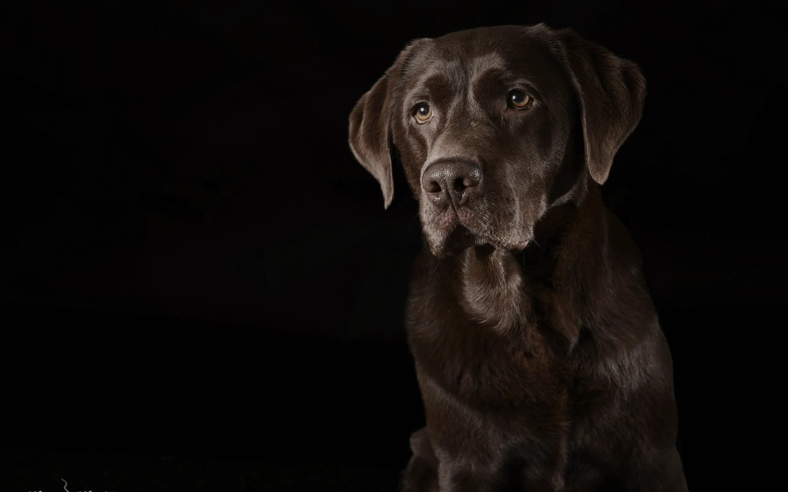

Warum ein gutes Bild mit Ruhe beginnt
Echte Emotionen entstehen nicht auf Knopfdruck. Ein Blick darauf, wie ein Shooting bei mir wirklich abläuft.
Journal
Gedanken, Geschichten und kleine Einblicke hinter die Kamera, rund um Hunde, Licht und die Kunst, einen Moment festzuhalten.

Studio Journal
Der Journal-Bereich bekommt eine redaktionelle Bühne: größere Motive, mehr Nähe zum Studio und Beiträge, die sich wie Einblicke in eine Fine-Art-Produktion anfühlen.
Aus dem StudioEchte Emotionen entstehen nicht auf Knopfdruck. Ein Blick darauf, wie ein Shooting bei mir wirklich abläuft.
Ein paar einfache Dinge, die helfen, damit sich Ihr Hund im Studio von Anfang an wohlfühlt.
Zwischen Licht, Geduld und Handwerk: Warum diese Bilder mehr sind als ein schnelles Foto.
Platzhalter-Beiträge, die ersten echten Journal-Artikel folgen mit dem Launch.